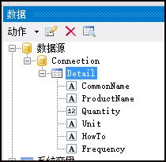

原文连接:https://www.cnblogs.com/wuhuacong/p/11690849.html
在我们开发某个系统的时候，客户总会提出一些特定的报表需求，固定的报表格式符合他们的业务处理需要，也贴合他们的工作场景，因此我们尽可能做出符合他们实际需要的报表，这样我们的系统会得到更好的认同感。本篇随笔介绍如何基于FastReport报表工具，生成报表PDF文档展示医院处方笺的内容。
之前在随笔《在Winform开发中使用FastReport创建报表》介绍过FastReport这个强大的报表工具，虽然介绍了各种报表的处理代码，不过主要的案例还是官方的案例，本篇随笔介绍基于某个医院的处方笺的格式报表的处理。
FastReport.Net是一款适用于Windows Forms, ASP.NET和MVC框架的功能齐全的报表分析解决方案。FastReport.Net以C#语言编写而成并只包含可托管的代码。它与.NET Framework 2.0以及更高版本兼容。支持在报表中添加文本、图像、线条、形状、语句、条形码、矩阵、表格、RTF、选择框等，列表报表、分组报表、主从报表、多列报表，子报表都可以实现处理。通可以为终端用户提供一个报表设计器，让用户可以方便的修改现有报表和创建自定义报表。
1、定义报表模板
和其他常规的报表工具一样，FastReport.Net报表工具也需要定义好报表模板文件，然后再基于这个报表模板进行内容的呈现，报表模板一般定义标题、报表页眉、明细内容、页脚等信息。
我们来看看大概的需求效果，这个是处方笺的常规格式。
我大概需要弄个类似格式的处方笺的报表，其中处方药需要动态生成，以及患者信息、医生审核签字的地方需要动态生成，当然，二维码，条码等内容也需要一并根据信息动态生成出来，由于我主要想通过PDF展示，因此使用报表工具生成PDF文档，已经预览或者下载即可。
我们先来看看最终设计好的报表模板，在FastReport设计器里面的效果如下所示。
其中，标题部分，主要在页眉，需要展示处方列表的在数据区展示，页脚放置一些联系信息等，这样就构建了一个完整的报表模板。
创建一个报表模板，我们先要定义报表页面格式，报表报表的宽度，高度是自定义的还是标准的，还要设置它的页边距等信息，如下所示。

页边距设置如下所示。
由于这个报表包含了主表信息，和明细表的信息，我们主表动态信息，可以通过参数的绑定方式绑定，明细表则通过绑定DataTable的方式动态处理即可。
采用参数绑定，我们需要在报表设计器里面定义好我们需要的参数，如下所示。

我们一般预先定义好相关的参数，然后绑定在模板里面，并设置好内容的对其格式即可。
如报表页面里面，我们放置了一个表格，定义好表格的行列和宽度后，双击表格单元格，就可以设置表格单元格的文本内容为对应的参数了，如下界面所示。

为了展示每项的序号，我们也需要使用到系统变量，如我们需要展示下面的内容。
那么需要定义好每项的序号，和数据字段名称。
对于动态展示的明细列表部分，我们需要定义一个数据源的方式，从而可以让报表模板绑定对应的字段名称。

我根据数据表的信息，生成一个用于绑定明细列表的数据源，如下所示。

这样我们在代码绑定的时候，只需要指定Detail的名称和对应的字段名称即可，有了这些定义，我们可以在报表设计中使用字段绑定了。

在数据区拖入对应的字段定义，并调整文本大小和对其，就可以设计出明细的部分字段绑定了。
对于二维码和条码，我们可以从报表工具栏里面拖入对应的控件，并设置对应的绑定参数和显示内容即可（这些也可以通过参数，运行的时候进行动态绑定）。
最后设计好的报表如开始介绍那样，是一个完整的报表模板了。
预览的时候，我们可以看到内容绑定的地方都是空白，因为我们没有绑定数据源的原因，不过整个报表的格式已经出来了，大概就是我们需要的结果。
2、生成报表PDF内容
通过上面报表模板的设计，我们基本的前期工作就准备好了，需要的就是根据实际业务的需要，动态呈现数据了。
在绑定数据并生成PDF格式报表的时候，我们需要先构建一个报表对象，如下代码所示。
//生成PDF报表文档到具体文件
Report report = new Report();
report.Load(reportPath);由于数据我们是动态构建的，因此我们需要准备参数数据源和字段数据源两个部分，参数我们用字典来承载，字段数据，我们用DataTable来承载，如下所示。
//定义参数和数据格式
var dict = new Dictionary<string, object>();
var dt = DataTableHelper.CreateTable("ProductName,Quantity|int,Unit,Specification,HowTo,Frequency");然后我们根据系统需要填入动态的数据，如下代码所示。
//准备数据
dict.Add("Name", info.PatientName);
dict.Add("Gender", info.Gender);
var age = info.BirthDate.GetAge();
dict.Add("Age", age);
dict.Add("Telephone", info.Telephone);
dict.Add("CreateTime", info.CreateTime);
var checkDoctor = BLLFactory<User>.Instance.GetFullNameByOpenID(info.CheckDoctor);
dict.Add("CheckDoctor", !string.IsNullOrEmpty(checkDoctor) ? checkDoctor : "未知");
var CheckPharmacist = BLLFactory<User>.Instance.GetFullNameByOpenID(info.CheckPharmacist);
dict.Add("CheckPharmacist", !string.IsNullOrEmpty(CheckPharmacist) ? CheckPharmacist : "未知");
var SendUser = BLLFactory<User>.Instance.GetFullNameByOpenID(info.SendUser);
dict.Add("SendUser", !string.IsNullOrEmpty(SendUser) ? SendUser : "未知");
var qrcode = string.Format("{0}/h5/PrescriptionDetail?id={1}", ConfigData.WebsiteDomain, info.ID);
dict.Add("QrCode", qrcode);
dict.Add("BarCode", info.PrescriptionNo);
if(detailList != null)
{
foreach(var item in detailList)
{
var dr = dt.NewRow();
dr["ProductName"] = item.ProductName;
dr["Quantity"] = item.Quantity;
dr["Unit"] = item.Unit;
dr["Specification"] = "";
dr["HowTo"] = item.HowTo;
dr["Frequency"] = item.Frequency;
dt.Rows.Add(dr);
}
}最后根据上面的数据，绑定并生成PDF报表即可，如下代码所示。
//刷新数据源
report.RegisterData(dt, "Detail");
foreach (string key in dict.Keys)
{
report.SetParameterValue(key, dict[key]);
}
//运行报表
report.Prepare();
//导出PDF报表
PDFExport export = new PDFExport();
report.Export(export, realPath);
report.Dispose();由于这个功能我们是在微信公众号里面集成的一个报表呈现，因此我们可以通过PDF预览的方式，或者直接打开PDF文档。、
如果采用PDF在线预览方式，可以参考我随笔《实现在线预览PDF的几种解决方案》介绍的那样，最终采用PDFJS的在线预览方案，不管在微信端，还是Web端都是比较不错的效果。
如果采用PDFJS预览方式，那么JS代码如下所示。
var baseUrl = "@ViewBag.WebsiteDomain/Content/JQueryTools/pdfjs/web/viewer.html";
var url = baseUrl + "?file=" + filePath;//实际地址
location.href = url;如果是直接打开PDF，我们我们就直接传递给浏览器一个PDF文件路径即可
location.href = filePath在微信端预览的效果如下所示。

使用FastReport报表，总体来说，工作量主要是在设计报表模板这里，通过代码实现数据绑定的工作反而非常简单，只需要指定对应的参数和字段数据表即可，而报表的设计是一项精细的工作，我们需要根据实际情况，反复调整格式和呈现的效果才能做到尽善尽美，不过整体来说FastReport提供了非常强大的报表设计和处理过程，使得我们可以在设计一些复杂报表的时候，可以更加高效。
3、采用其他报表设计-锐浪报表设计展现
在选项使用FastReport报表呈现的时候，我也试过锐浪报表的处理方式，锐浪报表的整体呈现效果也是非常不错的，这里顺便介绍一下锐浪报表的设计、运行时绑定数据源等的步骤代码，以供参考。
首先我们需要定义好一个报表的模板信息，和FastReport报表模板一样，也是类似的定义方式，报表模板设计如下所示。
上面我们可以看到，它也是有参数绑定和字段绑定两种方式。
实现数据绑定的代码如下所示。
//生成PDF报表文档到具体文件
GridExportHelper helper = new GridExportHelper(reportPath);
var json = FileUtil.FileToString(Path.Combine(System.AppDomain.CurrentDomain.BaseDirectory, "Report/Pres.json"), Encoding.UTF8);
bool success = helper.ExportPdf(json, realPath, HttpContext);
if (success)
{
result = Content(exportPdfPath);//返回Web相对路径
}
helper.Dispose();//销毁对象其中ExportPdf接收一个JSON字符串，实现代码如下所示。
/// <summary>
/// 导出PDF
/// </summary>
/// <typeparam name="T">列表对象类型</typeparam>
/// <param name="list">列表对象</param>
/// <param name="filePath">存储路径</param>
/// <param name="context"></param>
/// <returns></returns>
public bool ExportPdf(string json, string filePath, HttpContextBase context)
{
//从对应文件中载入报表模板数据
Report.LoadFromFile(this.ReportPath);
//加载JSON对象
Report.LoadDataFromXML(json);
IGRExportOption ExportOption = Report.PrepareExport(GRExportType.gretPDF);
var exportPdf = Report.ExportToBinaryObject();
Report.UnprepareExport();
var succeeded = exportPdf.SaveToFile(filePath);
return succeeded;
}最后呈现的大概效果如下所示。